The studio reads and writes several gem-design file formats, plus two output-only formats:
a triangle mesh (.stl) and a printable cutting sheet (.pdf). You can also
share a design as a link, with no file at all. This page covers opening a design, what each format
does and doesn't keep, the cutting sheet, and sharing your designs.
Choose File > Open (Cmd+O on a Mac, Ctrl+O elsewhere) and pick a file, or drag a file straight onto the render pane and drop it there – both go through the same loader, so they behave identically. While a file is dragged over the pane it shows a dashed outline and a hint saying which formats it accepts.
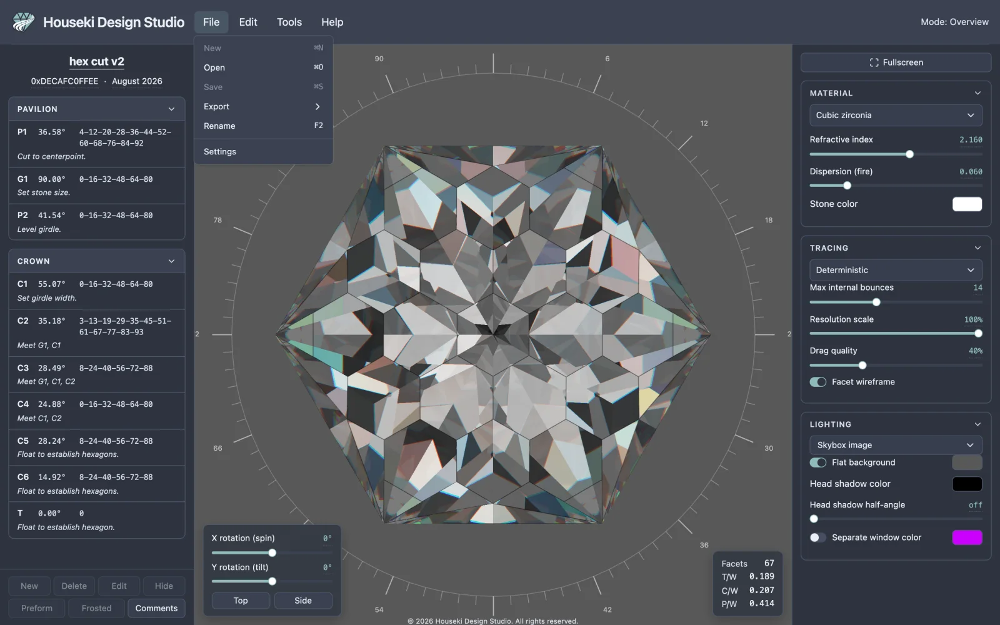
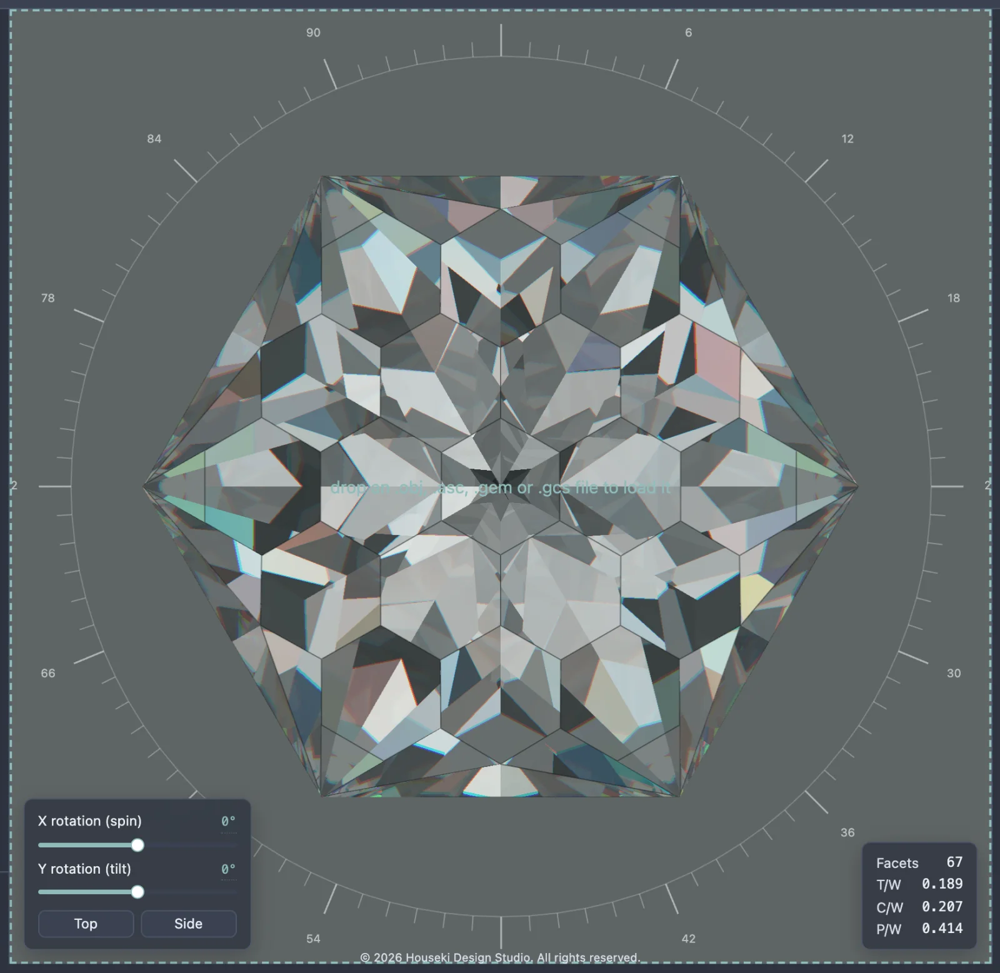
Opening a file replaces the stone on screen. The four formats you can open are:
| Format | Brings with it |
|---|---|
.obj (Wavefront) | Only the stone's shape. No cutting instructions, title, author or date – the instructions pane stays empty, the way it does before any design is loaded. |
.asc / .gem (GemCad) | The full cutting instructions (every tier's angle, depth and index teeth, each with its typed note), the index gear and symmetry, and a title. No author or date – those fields are cleared, since the format has nowhere to keep them. |
.gcs (Gem Cut Studio) | Everything a GemCad file brings, plus the title, author and date, and which tiers are marked Hidden or Frosted. |
Opening a design with no cutting instructions of its own – a plain
.obj, or a GemCad/Gem Cut Studio file whose instructions couldn't be read –
still shows the stone; the instructions pane is simply empty, the same as it is before you open
anything.
A file that can't be opened at all – or one that opens but whose cutting instructions can't be understood – shows a red dialog over the whole page, naming the file and the error. The previous stone stays loaded behind it: opening a bad file never clears what you had on screen. Dismiss it with its Close button or Esc.
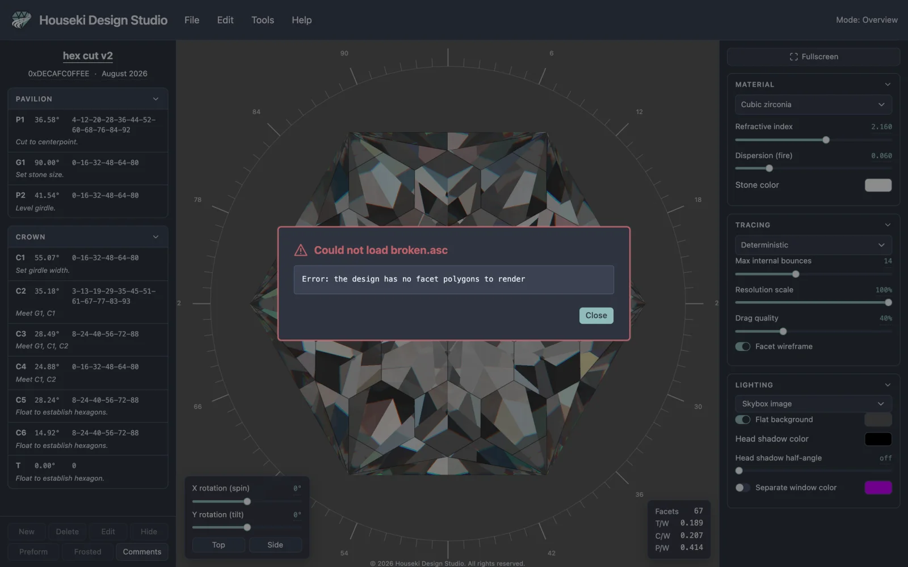
The same dialog appears if the file opens as a stone but its cutting instructions specifically can't be derived from it – the title then says the instructions couldn't be read rather than that the file couldn't be opened, since the stone itself did load.
Above the cutting instructions, the design's name, author and date are each a text field you click to edit – type, then click elsewhere or press Enter to save. Opening a file sets the name to its own title if it has one, or to the file's name otherwise. File > Rename (F2) opens the same name field, wherever it is.
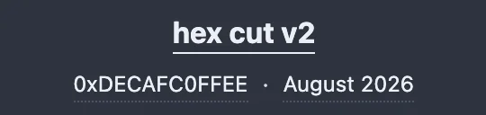
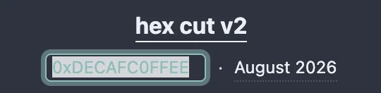
The date field shows a month and year, such as "September 2026", not a full date. Clearing it snaps it back to today automatically.
A GemCad .asc or .gem file has no author or date
fields of its own. If you've set them before exporting to one of those formats, the studio adds
a line noting them among the design's own header comments (the Comments
button at the bottom of the cutting instructions) so the information isn't thrown away –
but re-opening the file always clears the Author field and resets Date to today, since the
format itself has nowhere to read them back from.
Choose File > Export and pick a format. Each one downloads a file named after the design's current name. In a browser that offers its own Save dialog, that opens instead, letting you choose the folder and file name and confirm or change the file type; otherwise the file lands straight in your downloads folder.
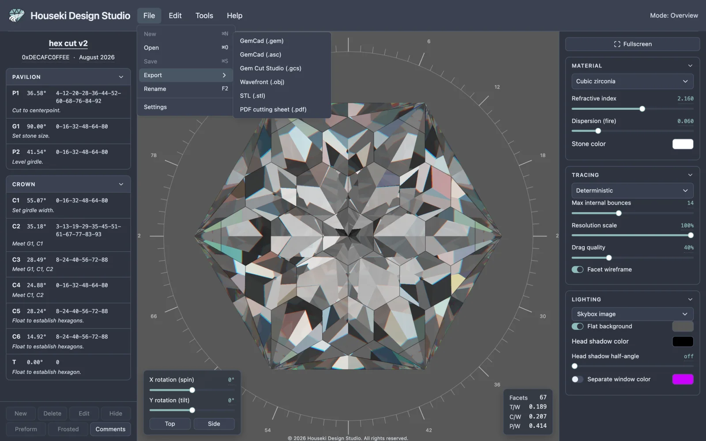
| Format | Open | Export | Keeps |
|---|---|---|---|
GemCad (.gem) | Yes | Yes | Angles, depths, index teeth, symmetry, gear, title. Not: a tier's typed note, author, date, or its Hidden/Frosted/Preform marks. |
GemCad (.asc) | Yes | Yes | Everything the binary GemCad format keeps, plus each tier's typed note. Not: author, date, or Hidden/Frosted/Preform marks. |
Gem Cut Studio (.gcs) | Yes | Yes | Everything above, plus author, date, and which tiers are Hidden or Frosted. Not: the Preform mark. |
Wavefront (.obj) | Yes | Yes | The stone's shape only – no tiers, notes, title, author or date. |
STL (.stl) | No (export only) | Yes | The stone's shape only, as loose triangles. |
PDF cutting sheet (.pdf) | No (export only) | Yes | A printed sheet, not a design file – it can't be opened back into the studio. |
Every export needs a loaded design behind the stone – a plain
.obj you opened directly has none, and nothing to write. GemCad (.gem) and
Wavefront (.obj) say so in a dialog; the others simply do nothing.
File > Export > PDF cutting sheet (.pdf) prints the loaded design as a single sheet (more pages follow if the instructions don't fit on the first): the name, author and date at the top left over three small tables of facet counts, proportions and design data; four line drawings of the stone at the top right (from above, from the side, from the front, and from below); and the full cutting instructions below, pavilion tiers then crown tiers, each with its angle, its index teeth and its note.
A tier marked Frosted has its facets filled grey in every drawing that shows them, and its teeth sit on a grey band in the instructions below. A tier marked Preform has its teeth wrapped in curly braces, in both the drawings' facet labels and the instructions, the same as it does in the on-screen cutting instructions.
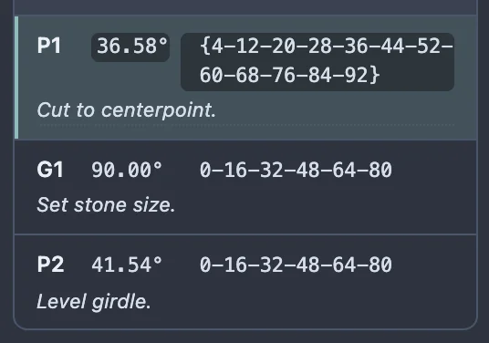
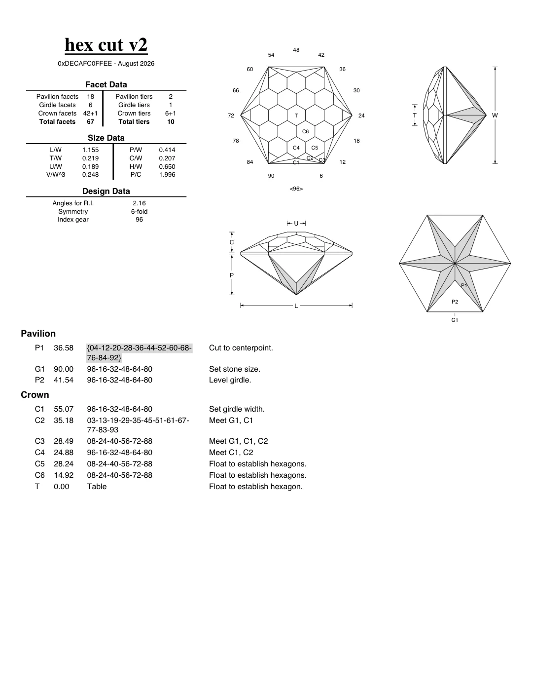
The link in your browser's address bar is the share link. Copy it and send it to anyone – there is no separate "Share" button to look for. The studio rewrites the address bar itself moments after every edit you can undo, so whatever is sitting in the address bar always matches the design on screen. Select it (Ctrl+L, or Cmd+L on a Mac, puts the cursor there) and copy it (Ctrl+C / Cmd+C) the way you would any other address.
The whole cutting design goes into the link: every tier's angle, depth and facets, whether each tier is currently hidden, a preform or frosted, and its cutting instructions. The design's title, author and date, at the top of the cutting instructions, travel with it too.
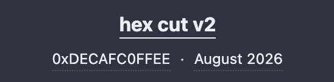
So does the Material section of the render settings: the material choice, Refractive index, Dispersion (fire) and Stone color all go with the design, so the stone looks the same to whoever opens the link.
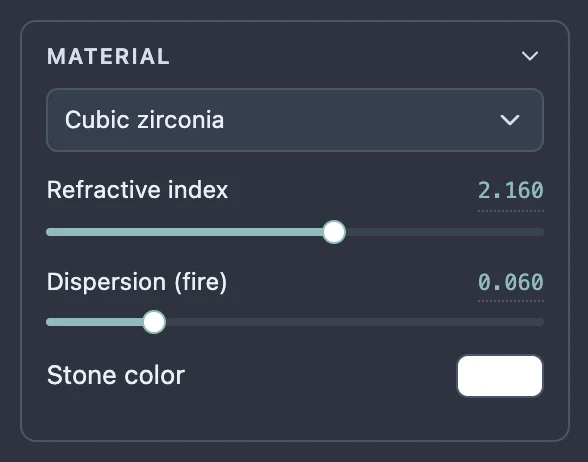
The rest of the render settings – the Tracing section (which renderer, Max internal bounces, Resolution scale, Drag quality, Facet wireframe) and the Lighting section (the lighting model, the background and window colors, the head shadow) – are remembered only in this browser, on this device, for the next time you open the studio here. None of it is part of the link, so a design you send opens for the other person with their own settings, or the studio's defaults if they have never changed them, not yours. The stone's current turn, tilt and zoom are not saved anywhere either; a shared link always opens to the same starting view.
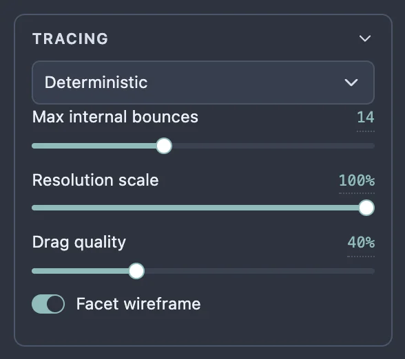
Open a link someone sent you the way you would open any page, and the studio loads straight into that design. Pasting a link over an already-open studio works the same way, without reloading the page. Your browser's Back and Forward buttons step between the designs you've had open in this tab, the same way they do on any page.
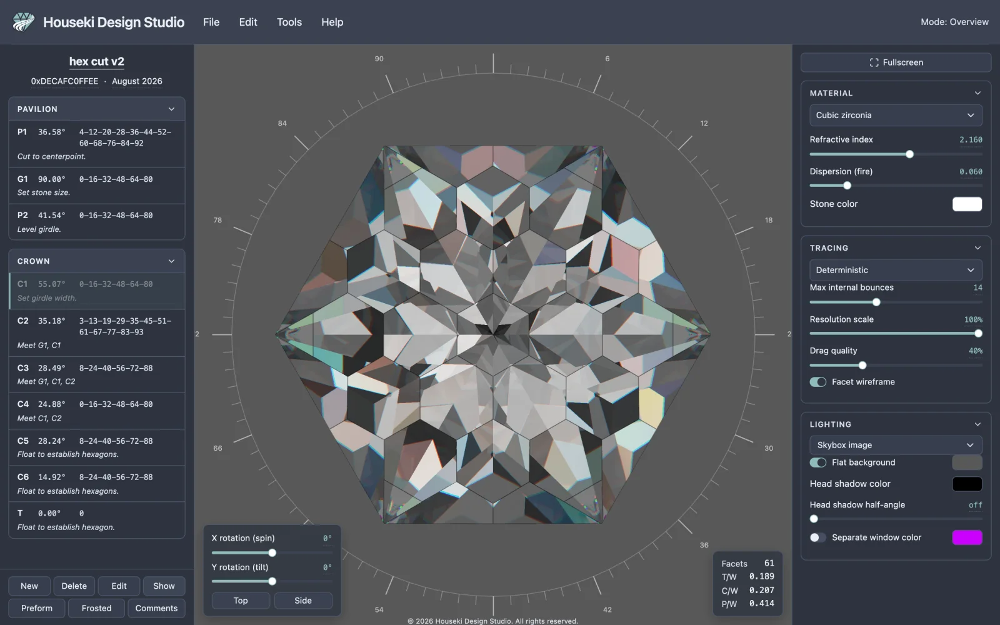
If a link was cut short or altered along the way – some chat and mail programs do this to long links – the studio shows a warning naming what went wrong, and leaves whatever stone was already on screen exactly as it was. Nothing is lost or overwritten by a link that fails to open.
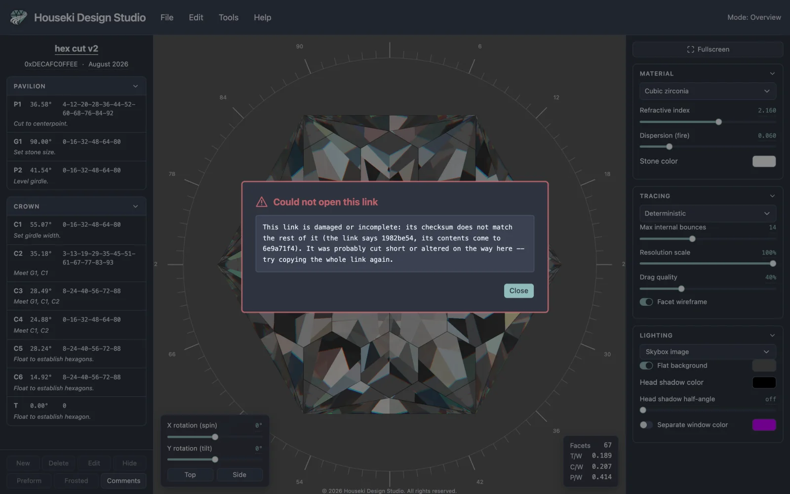
About 1,400 characters for a typical design – well within what browsers, messengers and mail programs accept, though a very long link can occasionally be cut short by one of those in transit, which is exactly what the warning above catches.
Prefer a file you can attach or keep on your own computer instead of a link? See Exporting a design above.
Houseki Design Studio has no server. It runs entirely in your browser, and a design you share exists only inside the link itself – nothing about it is uploaded, stored or sent anywhere. Sending someone a link is the only way a design leaves your device, and it goes straight to them, not through us.